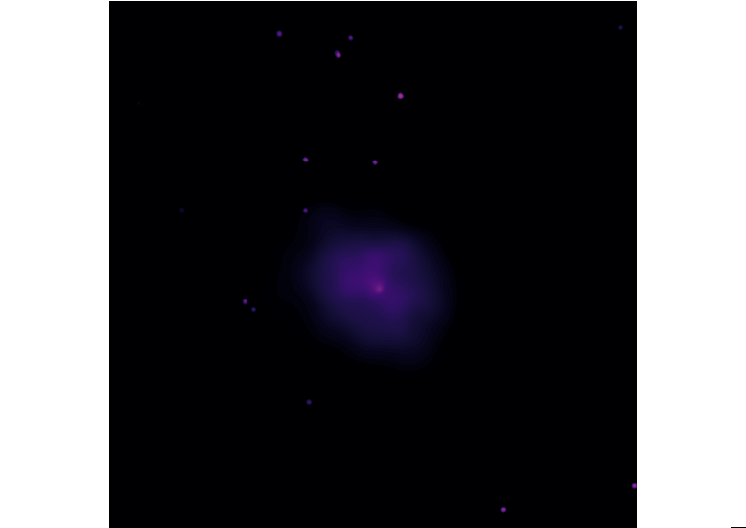
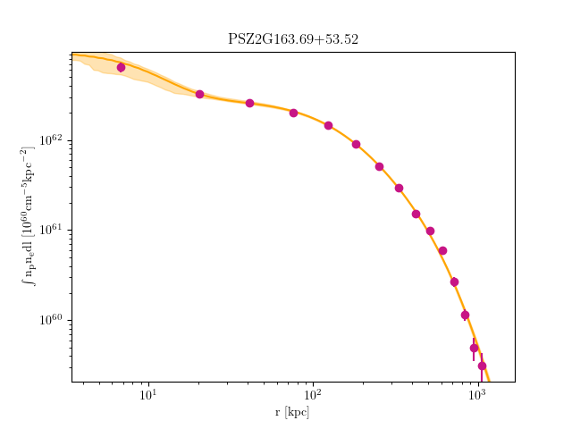
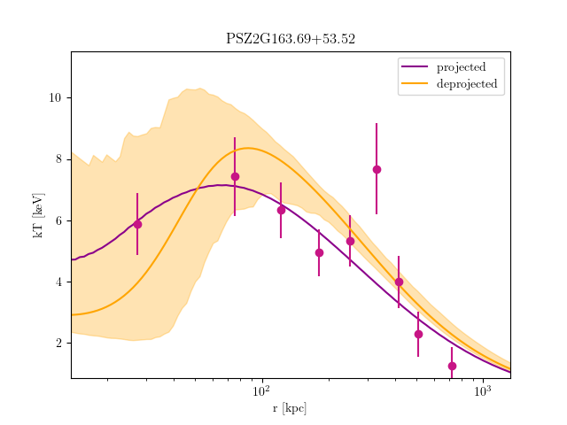

Cluster
PSZ2G163.69+53.52
RA: 155.597 · Dec: 50.120 · z: 0.158 · M500: 4.734 × 1014 M☉
To download the raw data for this cluster, you can Search ChaSeR. Following this link will copy the cluster name to your clipboard. Paste it into the “Target Name” search box, click “Resolve Name”, then click “Search” to return all relevant observations.

Download the adaptively smoothed cluster image here: PSZ2G163.69+53.52_adaptively_smoothed.img
Emission Measure Profiles
Here is the best-fit emission measure profile:

The annular profile information is available in file format here: PSZ2G163.69+53.52_EM.txt
Temperature Profiles
Here is the best-fit temperature profile:

The annular profile information is available in file format here: PSZ2G163.69+53.52_kT.txt